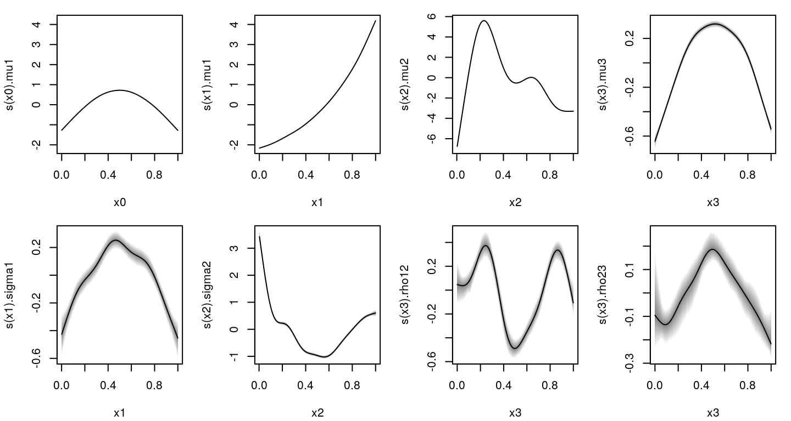

mvnorm.RmdThe family mvnorm_bamlss implements the multivariate normal distribution that can be used for estimation with bamlss. To illustrate the usage we simulate data from a trivariate normal.
library("bamlss")
library("mvtnorm")
## Set the seed for reproducability.
set.seed(123)
## Simulate data.
n <- 1000
## True functions.
f0 <- function(x) 2 * sin(pi * x)
f1 <- function(x) exp(2 * x)
f2 <- function(x) 0.2 * x^11 * (10 * (1 - x))^6 + 10 * (10 * x)^3 * (1 - x)^10
f3 <- function(x) sin(x * 3) - 3
f4 <- function(x) cos(x * 6) - 2
f5 <- function(x) {
eta <- sin(scale2(x, -3, 3)) - 3
eta / sqrt(1 + eta^2)
}
f6 <- function(x) {
eta <- cos(scale2(x, -3, 3)) - 2
eta / sqrt(1 + eta^2)
}
## Covariate data.
d <- data.frame(
"x0" = runif(n),
"x1" = runif(n),
"x2" = runif(n),
"x3" = runif(n)
)
s1 <- exp(f3(d$x1))
s2 <- exp(f4(d$x2))
s3 <- exp(rep(-1, n))
rho12 <- f5(d$x3)
rho13 <- rep(0.1, n)
rho23 <- f6(d$x3)
y <- matrix(0, n, 3)
## Generate response observations.
for(i in 1:n) {
V <- diag(c(s1[i], s2[i], s3[i])^2)
V[1, 2] <- rho12[i] * s1[i] * s2[i]
V[1, 3] <- rho13[i] * s1[i] * s3[i]
V[2, 3] <- rho23[i] * s2[i] * s3[i]
V[2, 1] <- V[1, 2]
V[3, 1] <- V[1, 3]
V[3, 2] <- V[2, 3]
mu <- c(f0(d$x0[i]) + f1(d$x1[i]), f2(d$x2[i]), f3(d$x3[i]))
y[i, ] <- rmvn(1, mu, V)
}
## Specify response names and add to data frame.
colnames(y) <- paste0("y", 1:3)
d <- cbind(d, as.data.frame(y))Now we can setup the model formula with
f <- list(
y1 ~ s(x0) + s(x1),
y2 ~ s(x2),
y3 ~ s(x3),
sigma1 ~ s(x1),
sigma2 ~ s(x2),
sigma3 ~ 1,
rho12 ~ s(x3),
rho13 ~ 1,
rho23 ~ s(x3)
)Note that the numbering of the correlation parameters is somewhat untrivial, but it corresponds to the position of the correlation matrix. The model can be estimated using the usual specifications, but the dimension of the multivariate normal distribution must be specified directly in the family.
After the MCMC algorithm is completed, all summary and extraction functions can be used as usual.
##
## Call:
## bamlss(formula = f, family = mvnorm_bamlss(k = 3), data = d)
## ---
## Family: mvnorm
## Link function: mu1 = identity, mu2 = identity, mu3 = identity, sigma1 = log, sigma2 = log, sigma3 = log, rho12 = rhogit, rho13 = rhogit, rho23 = rhogit
## *---
## Formula mu1:
## ---
## y1 ~ s(x0) + s(x1)
## -
## Parametric coefficients:
## Mean 2.5% 50% 97.5% parameters
## (Intercept) 4.463 4.456 4.463 4.471 4.464
## -
## Acceptance probability:
## Mean 2.5% 50% 97.5%
## alpha 1 1 1 1
## -
## Smooth terms:
## Mean 2.5% 50% 97.5% parameters
## s(x0).tau21 1.4957 0.4989 1.2566 3.8044 0.031
## s(x0).alpha 1.0000 1.0000 1.0000 1.0000 NA
## s(x0).edf 8.8549 8.6823 8.8675 8.9566 6.663
## s(x1).tau21 1.5608 0.5454 1.2539 4.7034 0.195
## s(x1).alpha 1.0000 1.0000 1.0000 1.0000 NA
## s(x1).edf 8.8365 8.6602 8.8473 8.9575 8.206
## ---
## Formula mu2:
## ---
## y2 ~ s(x2)
## -
## Parametric coefficients:
## Mean 2.5% 50% 97.5% parameters
## (Intercept) 3.276 3.260 3.276 3.295 3.272
## -
## Acceptance probability:
## Mean 2.5% 50% 97.5%
## alpha 1 1 1 1
## -
## Smooth terms:
## Mean 2.5% 50% 97.5% parameters
## s(x2).tau21 581.594 196.200 472.467 1570.624 138.045
## s(x2).alpha 1.000 1.000 1.000 1.000 NA
## s(x2).edf 8.999 8.999 8.999 9.000 8.998
## ---
## Formula mu3:
## ---
## y3 ~ s(x3)
## -
## Parametric coefficients:
## Mean 2.5% 50% 97.5% parameters
## (Intercept) -2.325 -2.347 -2.325 -2.304 -2.32
## -
## Acceptance probability:
## Mean 2.5% 50% 97.5%
## alpha 1 1 1 1
## -
## Smooth terms:
## Mean 2.5% 50% 97.5% parameters
## s(x3).tau21 0.7537 0.2247 0.5956 2.3505 0.104
## s(x3).alpha 1.0000 1.0000 1.0000 1.0000 NA
## s(x3).edf 7.0921 6.0282 7.0858 8.2334 5.160
## ---
## Formula sigma1:
## ---
## sigma1 ~ s(x1)
## -
## Parametric coefficients:
## Mean 2.5% 50% 97.5% parameters
## (Intercept) -2.086 -2.128 -2.087 -2.044 -2.085
## -
## Acceptance probability:
## Mean 2.5% 50% 97.5%
## alpha 0.9757 0.8250 0.9999 1
## -
## Smooth terms:
## Mean 2.5% 50% 97.5% parameters
## s(x1).tau21 1.3533 0.1459 0.8480 5.0489 2.804
## s(x1).alpha 0.8541 0.3320 0.9356 1.0000 NA
## s(x1).edf 5.6462 3.7602 5.6178 7.5910 6.999
## ---
## Formula sigma2:
## ---
## sigma2 ~ s(x2)
## -
## Parametric coefficients:
## Mean 2.5% 50% 97.5% parameters
## (Intercept) -1.777 -1.815 -1.776 -1.742 -1.774
## -
## Acceptance probability:
## Mean 2.5% 50% 97.5%
## alpha 0.9865 0.8944 1.0000 1
## -
## Smooth terms:
## Mean 2.5% 50% 97.5% parameters
## s(x2).tau21 73.8518 22.2223 55.4773 219.8731 85.182
## s(x2).alpha 0.8510 0.3495 0.9390 1.0000 NA
## s(x2).edf 8.8633 8.6955 8.8754 8.9686 8.916
## ---
## Formula sigma3:
## ---
## sigma3 ~ 1
## -
## Parametric coefficients:
## Mean 2.5% 50% 97.5% parameters
## (Intercept) -1.0301 -1.0693 -1.0298 -0.9938 -1.022
## -
## Acceptance probability:
## Mean 2.5% 50% 97.5%
## alpha 0.9621 0.7437 0.9991 1
## ---
## Formula rho12:
## ---
## rho12 ~ s(x3)
## -
## Parametric coefficients:
## Mean 2.5% 50% 97.5% parameters
## (Intercept) -0.8469 -0.8874 -0.8501 -0.7702 -0.866
## -
## Acceptance probability:
## Mean 2.5% 50% 97.5%
## alpha 6.278e-01 1.070e-61 8.759e-01 1
## -
## Smooth terms:
## Mean 2.5% 50% 97.5% parameters
## s(x3).tau21 1.284e+01 3.322e+00 9.790e+00 4.524e+01 24.314
## s(x3).alpha 2.554e-01 4.625e-67 7.836e-02 1.000e+00 NA
## s(x3).edf 7.995e+00 6.998e+00 8.001e+00 8.726e+00 8.569
## ---
## Formula rho13:
## ---
## rho13 ~ 1
## -
## Parametric coefficients:
## Mean 2.5% 50% 97.5% parameters
## (Intercept) 0.03327 -0.02900 0.03953 0.05855 0.037
## -
## Acceptance probability:
## Mean 2.5% 50% 97.5%
## alpha 6.586e-01 5.487e-60 9.194e-01 1
## ---
## Formula rho23:
## ---
## rho23 ~ s(x3)
## -
## Parametric coefficients:
## Mean 2.5% 50% 97.5% parameters
## (Intercept) -0.8673 -0.9094 -0.8686 -0.8193 -0.869
## -
## Acceptance probability:
## Mean 2.5% 50% 97.5%
## alpha 6.547e-01 2.169e-64 9.121e-01 1
## -
## Smooth terms:
## Mean 2.5% 50% 97.5% parameters
## s(x3).tau21 1.067e+00 8.240e-02 5.090e-01 7.421e+00 0.035
## s(x3).alpha 2.871e-01 4.360e-186 7.989e-02 1.000e+00 NA
## s(x3).edf 5.174e+00 3.581e+00 5.058e+00 7.802e+00 3.008
## ---
## Sampler summary:
## -
## DIC = -2986.723 logLik = 1526.518 pd = 66.3138
## runtime = 147.739
## ---
## Optimizer summary:
## -
## AICc = -2971.752 edf = 65.5196 logLik = 1556.064
## logPost = 1193.908 nobs = 1000 runtime = 110.476
Umlauf, Nikolaus, Nadja Klein, Achim Zeileis, and Thorsten Simon. 2021. bamlss: Bayesian Additive Models for Location Scale and Shape (and Beyond). https://CRAN.R-project.org/package=bamlss.